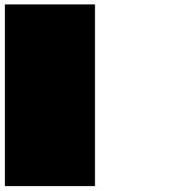

Original Taj Mahal Image
Blurred Taj Mahal

Sharpened Taj Mahal (with alpha 1)
Sharpened Taj Mahal (with alpha 2)
Sharpened Taj Mahal (with alpha 5)
Here, we can see the results of convolutions of a box filter, and the finite difference operators on a selfie of me. Multiple methods for convolution were tested, including a variation with 4 for-loops, a variation with 2 for-loops, and a scipy's convolve2d function. The time for the 4 for-loop version was 60.95 seconds, for the 2 for-loop version was 4.68 seconds, and for the convolve2d function was 0.16 seconds, which makes sense since more and more portions were vectorized, leading to faster speeds. Boundaries were handled by first zero-padding the image based on the kernel size (add padding on both sides of k // 2 to keep the image size the same).
Original Selfie
Selfie with 9x9 Box Filter Applied
Selfie with D_x Applied
Selfie with D_y Applied
Here are the corresponding code snippets for the padding, 4 for-loop version, 2 for-loop version, and scipy convolve2d versions.
These are the partial derivatives in x and y, the gradient magnitude image, and the binarized edge image for the cameraman image. The partial derviative in the x direction led to the vertical lines being more accentuated, whereas in the y direction led to the horizontal lines being accentuated. The gradient magnitude image was created by taking the square root of the sum of the squares of the individual partial derivative images. The binary image was created by choosing the pixels above the threshold of 55, as this led to most of the edges still showing up while removing most of the noise, based on a qualitative assessment of different values.
Original Cameraman Image
Cameraman with D_y Applied
Cameraman with D_x Applied
Gradient Magnitude Cameraman
Binary Cameraman
Here is a demonstration of the same final image resulting from doing the following procedures: 1) Blurring the original image with a gaussian, convolving the gaussian image with D_x and D_y, and then creating the gradient magnitude and binarized versions of these images. 2) Convolving the gaussian filter with D_x and D_y separately, taking the convolution of the the original cameraman image with these two new filters, making the gradient magnitude image from these two, and then converting it into binary.
Procedure 1 Results
Cameraman with Blurring
Blurred Cameraman with D_x Applied
Blurred Cameraman with D_y Applied
Gradient Magnitude Cameraman
Binary Cameraman
Procedure 2 Results
Blurred Cameraman with D_x Applied
Blurred Cameraman with D_y Applied
Gradient Magnitude Cameraman
Binary Cameraman
Both procedures, using a threshold of 15, resulted in the same binary image being created. The gradient, and cameraman images with the D_x and D_y applied in one step with the convolution led to more visible edges, but the same final image.
Here, we are going to demonstrate image sharpening of the Taj Mahal. The unsharp mask filter works by subtracting the blurred version of the image (which can be done by applying a Gaussian filter) from the original image, which leaves the high-frequency parts of the image (which are typically the edges depending on the strength of the filter). This high-frequency image can then be added to the original image with a certain constant multiplied by it to make it look like the original image has been sharpened.
Original Taj Mahal Image
Blurred Taj Mahal
Sharpened Taj Mahal (with alpha 1)
Sharpened Taj Mahal (with alpha 2)
Sharpened Taj Mahal (with alpha 5)
We can see that applying different alpha values led to different amounts of sharpening, with the Taj Mahal with alpha 5 having the edges sticking out the most and it thus looking "sharper".
Here, we are going to demonstrate image sharpening of a blurred version of the Taj Mahal.
Blurred Taj Mahal Image
Blurred Taj Mahal (even further)
Sharpened Blurred Taj Mahal (with alpha 1)
Sharpened Blurred Taj Mahal (with alpha 2)
Sharpened Blurred Taj Mahal (with alpha 5)
We can see here that when we tried to sharpen the blurred image, it added additional curved lines around which were caused by the intial blurring of hte image, and these become more accentuated. It's also not able to get to the original amount of sharpening since the initial blurred image didn't include as clear edges.
Here, we are going to demonstrate image sharpening of a tennis ball.
Original Ball Image
Blurred Ball
Sharpened Ball (with alpha 1)

Sharpened Ball (with alpha 2)
Sharpened Ball (with alpha 5)
Here we are going to demonstrate how to combine two images into a hybrid image, by having one being able to be seen from close by (high pass filter) and one from far away (low pass filter). This happens because when we are closer to the image, the edges are most visible, but when we're far away, the rest of the blurred image becomes more visible.
Here is a step-by-step visualization for a combination of Djokovic (low-pass) and Nadal (high-pass).
Original Djokovic
Original Nadal Image
Log Mag. FFT Djokovic
Log Mag. FFT Nadal

Low-Pass Filtered Djokovic
High-Pass Filtered Nadal
Log Mag. FFT Filtered Djokovic
Log Mag. FFT Filtered Nadal
Hybrid Djokovic Nadal
Log Mag. FFT Hybrid Djokovic Nadal
In the fourier transform, you can see that the initial images included both high and low frequencies, while filtering led to the low-pass filtered image only containing low frequencies, and vice-versa for the high-pass filtered image. The hybrid image was a combination of these two.
Here is a couple more examples of hybrid images, feature Derek and his former cat Nutmeg, and a cantaloupe-watermelon hybrid.
Original Watermelon
Original Cantaloupe
Hybrid Watermelon Cantaloupe
Original Derek

Original Nutmeg
Hybrid Derek Nutmeg
Here, we demonstrate the process of blending two images based on a mask that we create. For this first demo, we attempt to blend an orange and an apple about the center of the image. This is done by creating a mask which is white on the right half, and black on the left half, which is applied to the orange, while the opposite is applied to the apple. Then, we sum the product of the laplacian with the mask, and sum that for both images to get each level. For the final step, we also add the Gaussian image at the level. The mask is blended at each level when multiplying as well. For the sigma value, it was multiplied by 2 at each level, since as we progressed to higher levels, we wanted it to be more blended together and that's what a higher sigma helps lead to.
(a)
(b)
(c)
(d)
(e)
(f)
(g)
(h)
(i)
(j)
(k)
(l)
Here, we demonstrate the blending of a watermelon and a cantaloupe with each other, as well as a raquet with a tennis ball.
Cantaloupe
Watermelon
Watermelon Mask
Watermelon-Cantaloupe Blend
Ball
Racket
Ball Mask
Ball-Racket Blend